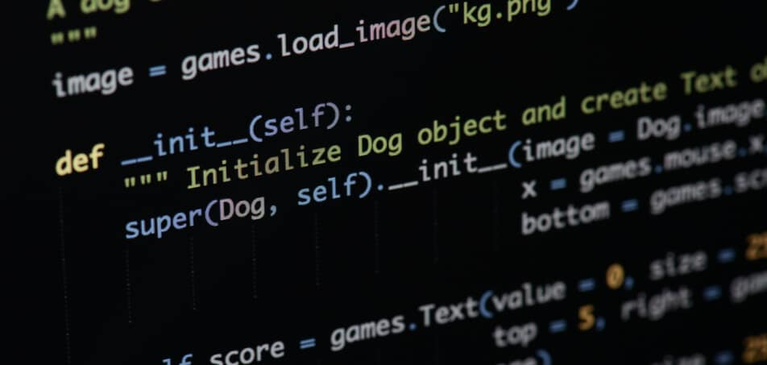
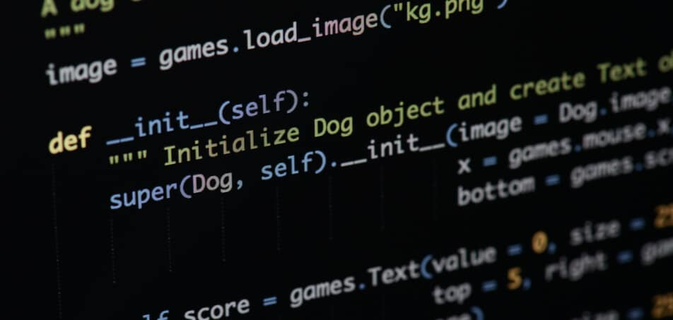

O que é python, para que serve e por que aprender?
Criado sob a filosofia de valorizar o esforço humano sobre o computacional, Python é uma linguagem de programação acessível e muito popular em setores emergentes da indústria de tecnologia.
Criado sob a filosofia de valorizar o esforço humano sobre o computacional, Python é uma linguagem de programação acessível e muito popular em setores emergentes da indústria de tecnologia.
A área de TI, ou área de Tecnologia da Informação, é aquela responsável por gerenciar o fluxo de informações em redes de computadores de uma organização.
Aprender um novo idioma pode abrir mais portas do que você imagina. Nos dias atuais saber uma segunda língua já é praticamente um requisito quase que essencial.

Sendo da área da tecnologia ou não, certamente você já deve ter ouvido falar em sistema operacional. Existem vários conceitos sobre, porém uma coisa é fato: ele é essencial!
Para receber as notícias sempre que postadas. Basta colocar seu e-mail abaixo: